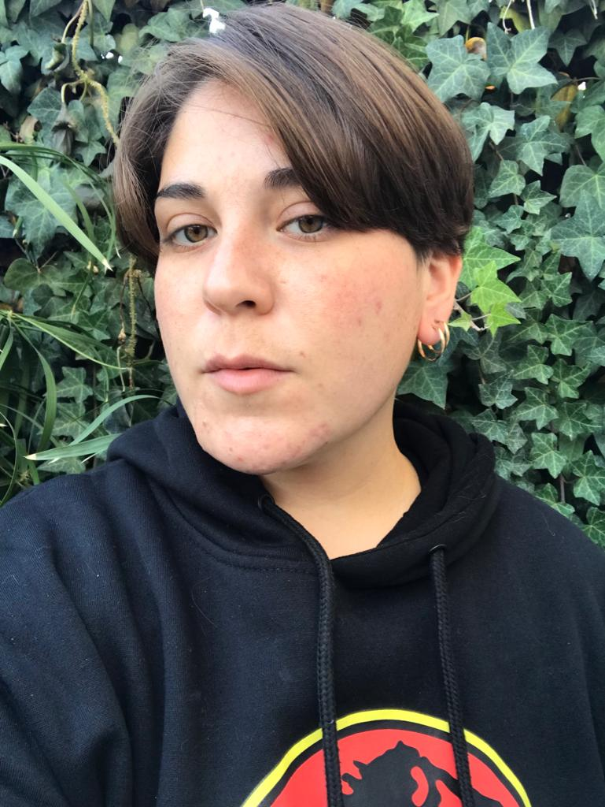

Curriculum Vitae

Lander Álvarez S.
Resumen
Comunicador social, proactivo y con capacidad de liderazgo
que siempre está buscando soluciones a nuevos desafíos.
Experiencia en trabajos con equipos multidisciplinarios.
Inglés nivel intermedio oral y escrito
Datos Personales
- Nombre: Lander Álvarez
- Lugar de Nacimiento: Rancagua - Chile
- Fecha de Nacimiento: 27 de Abril de 1991
- Nacionalidad: Chilena
Formación
Estudios universitarios en la carrera de Periodismo en la Universidad del Desarrollo,
actualmente se encuentra explorando nuevas áreas en el mundo de la programación, realizando
un curso intensivo en Java Script Full Stack en Desafío Latam.
Premios y reconocimientos en orden cronológico
- Certificación Programa de Formación de Lideres, UDD - 2018
- Primer lugar en Proyecto de innovación junto a
Fundación Techo-Chile para captación de nuevos
socios - 2017.
- Participación de Proyecto multimedia "El Nuevo
Chile" sobre inmigración - 2017
- Realización de taller radial con los niños y jovenes
del Centro Teletón de San Pedro de la Paz,
Concepción- 2016
- Especialización en Estrategía y Negocios (Fac. de
Ingenieria Comercial) Geopolítica y Políticas
Públicas (Fac. de Ciencias Políticas UDD).
- Primer lugar Campeonato de Interescolar de
Debate AIEP - 2009
- Segundo lugar Campeonato Interescolar de
Química - 2007.
- Premio al Científico Escolar Destacado -
Programa Explora-Conicyt - 2004
- Participación y exposición sobre divulgación
científica, Universidad de Cuyo, Mendoza -
Argentina - 2004
Redes Sociales:
Instagram
portafolio